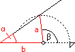
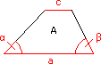
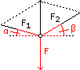
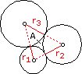
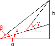
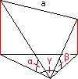
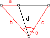

Trigonometrie - Aufgaben 3
1.
 Eine quadratische, a = 80 cm breite Falltür führt in einen Dachraum. Die Scharnierseite ist dem b = 1,45 m entfernten Raumende zugewandt, in dem Dach- und Bodenfläche unter dem Winkel α = 31° zusammenlaufen. Bis zu welchem Winkel lässt sich die Falltür öffnen?
2.
 Von einem Trapez kennt man die Grundlinie a = 62 cm, die anliegenden Winkel α = 42,3°, β = 61,8° und die Decklinie c = 26 cm. Wie groß ist die Fläche?
3.
 Eine Lampe hängt an zwei Seilen, die unter den Höhenwinkeln α = 14° und β = 21° zu gegenüber liegenden Häuserblocks laufen. Wie groß sind die Seilkräfte, die das Lampengewicht F = 300 N kompensieren?
4.
 Drei Kreise mit den Radien r1 = 3,2 cm, r2 = 4,1 cm und r3 = 5,6 cm berühren einander von außen. Wie groß ist die zwischen den Kreisen gelegene Fläche?
5.
 Eine Straße steigt unter α = 12° an. Von einem Punkt der Straße aus sieht man die Spitze eines Turms, der weiter oben unmittelbar neben der Straße steht, unter dem Höhenwinkel β = 26,2°. Wenn man sich dem Turm nähert, indem man a = 80 m auf der Straße zurücklegt, wächst der Höhenwinkel auf γ = 39,3°. Wie hoch ist der Turm?
6.
 Vom Ort O aus (880 m Seehöhe) sieht man die Bergspitze A (2370 m) unter dem Höhenwinkel α = 13,8° und die Bergspitze B (1990 m) unter β = 11,3°. Projiziert man beide Sehlinien in die durch O gehende Horizontalebene, dann schließen sie dort den Winkel γ = 76,3° ein. Wie lang ist AB?
7.
 Eine gerade Straße führt von B nach C. Der Ort D liegt dazwischen, a = 4,1 km nach B. Von einem abseits gelegenen Ort A aus, der b = 7,4 km von B und c = 9,1 km von C entfernt ist, wird der Horizontalwinkel
 CAB = 94° gemessen. Wie lang ist die geplante Verbindungsstraße AD?
CAB = 94° gemessen. Wie lang ist die geplante Verbindungsstraße AD?Ergebnisse:
1. 100° 2. 968,70 cm2 3. F1 = 488,3 N; F2 = 507,5 N 4. 2,73 cm2 5. 40,60 m
6. 7200 m 7. 5,6 km